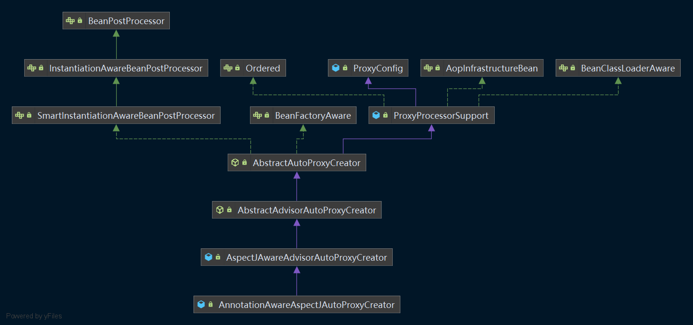

一 AOP
使用面向对象编程（OOP）有一些弊端，当需要为多个不具有继承关系的对象引入同一个公共行为时，例如日志、安全检测等，我们只有在每个对象里引用公共行为，这样程序中就产生了大量的重复代码，程序就不便于维护了，所以就有了一个面向对象编程的补充，即面向切面编程（AOP），AOP锁关注的方向是横向的，不同于OOP的纵向。
Spring2.0采用了 @AspectJ 注解对POJO进行标注，从而定义一个包含切点信息和增强横切逻辑的切面。Spring 2.0可以将这个切面织入到匹配的目标Bean中。
我们先看一下Spring AOP的示例
1.1 动态AOP使用示例
(1) 创建用于拦截的bean
在实际工作中，此bean可能是满足业务需要的核心逻辑，例如test方法中可能会封装着某个核心业务。
public class TestBean {
private String testStr = "testStr";
public TestBean() {
}
public String getTestStr() {
return testStr;
}
public void setTestStr(String testStr) {
this.testStr = testStr;
}
public void test() {
System.out.println("test");
}
}
(2) 创建Advisor
Spring中摒弃了最原始的繁杂配置方式而采用@AspectJ注解对POJO进行标注，使AOP的工作大大简化。例如，在AspectJTest类中，拦截上面的TestBea的所有方法，在控制台打印beforeTest、afterTest以及环绕的before 1和after 1：
@Aspect
public class AspectJTest {
@Pointcut("execution(* com.bianjf.aop.bean.TestBean.*(..))")
public void test(){}
@Before("test()")
public void beforeTest() {
System.out.println("beforeTest");
}
@After("test()")
public void afterTest() {
System.out.println("afterTest");
}
@Around("test()")
public Object aroundTest(ProceedingJoinPoint pjp) {
System.out.println("before 1");
Object o = null;
try {
o = pjp.proceed();
} catch (Throwable e) {
e.printStackTrace();
}
System.out.println("after 1");
return o;
}
}
(3) 创建配置文件
要在Spring中开启AOP功能，还需要在配置文件中添加如下声明：
<?xml version="1.0" encoding="UTF-8"?>
<beans xmlns="http://www.springframework.org/schema/beans"
xmlns:xsi="http://www.w3.org/2001/XMLSchema-instance"
xmlns:aop="http://www.springframework.org/schema/aop"
xmlns:context="http://www.springframework.org/schema/context"
xsi:schemaLocation="http://www.springframework.org/schema/beans
http://www.springframework.org/schema/beans/spring-beans-4.0.xsd
http://www.springframework.org/schema/aop
http://www.springframework.org/schema/aop/spring-aop-4.0.xsd
http://www.springframework.org/schema/context
http://www.springframework.org/schema/context/spring-context-4.0.xsd">
<aop:aspectj-autoproxy/>
<bean id="testBean" class="com.bianjf.aop.bean.TestBean"/>
<bean class="com.bianjf.aop.aspectj.AspectJTest"/>
</beans>
(4) 测试
最后测试如下：
public class AopTest {
public static void main(String[] args) {
ApplicationContext context = new ClassPathXmlApplicationContext("springAopTest.xml");
TestBean testBean = (TestBean) context.getBean("testBean");
testBean.test();
}
}
结果如下：
before 1
beforeTest
test
afterTest
after 1
Spring是否支持注解的AOP是由一个配置文件控制的，也就是aop:aspectj-autoproxy/，挡在配置文件中声明了这句配置的时候，Spring就会支持注解的AOP，那么我们从这里开始分析。
1.2 动态AOP自定义标签
我们进入spring-aop模块，查看其META-INF下面的spring.handlers文件，Spring通过SPI机制加载了AopNamespaceHandler，进入这个类，发现有这样一段函数：
/**
* 注册解析器(BeanDefinitionParser), 针对'config'、'spring-configured'、'aspectj-autoproxy'和'scoped-proxy'标签的解析器
*/
@Override
public void init() {
registerBeanDefinitionParser("config", new ConfigBeanDefinitionParser());
registerBeanDefinitionParser("aspectj-autoproxy", new AspectJAutoProxyBeanDefinitionParser());
registerBeanDefinitionDecorator("scoped-proxy", new ScopedProxyBeanDefinitionDecorator());
registerBeanDefinitionParser("spring-configured", new SpringConfiguredBeanDefinitionParser());
}
在解析配置文件的时候，一旦遇到aspectj-autoproxy注解时就会使用解析器AspectJAutoProxyBeanDefinitionParser进行解析，那么我们进入AspectJAutoProxyBeanDefinitionParser，查看其内部实现。
1.2.1 注册AnnotationAwareAspectJAutoProxyCreator
所有解析器，因为是对BeanDefinitionParser接口的统一实现，入口都是从parse函数开始的，AspectJAutoProxyBeanDefinitionParser的parse函数如下：
/**
* 解析函数
* @param element 需要被解析的元素
* @param parserContext 上下文
* @return BeanDefinition
*/
@Override
@Nullable
public BeanDefinition parse(Element element, ParserContext parserContext) {
AopNamespaceUtils.registerAspectJAnnotationAutoProxyCreatorIfNecessary(parserContext, element);//注册AnnotationAwareAspectJAutoProxyCreator
extendBeanDefinition(element, parserContext);//对于注解中子类的处理
return null;
}
其中registerAspectJAnnotationAutoProxyCreatorIfNecessary函数是我们比较关心的，也是关键逻辑实现：
/**
* 注册AnnotationAwareAspectJAutoProxyCreator
* @param parserContext 解析上下文
* @param sourceElement 元素
*/
public static void registerAspectJAnnotationAutoProxyCreatorIfNecessary(
ParserContext parserContext, Element sourceElement) {
//注册或升级AutoProxyCreator定义beanName为org.springframework.aop.config.internalAutoProxyCreator的BeanDefinition
BeanDefinition beanDefinition = AopConfigUtils.registerAspectJAnnotationAutoProxyCreatorIfNecessary(parserContext.getRegistry(), parserContext.extractSource(sourceElement));
//对于proxy-target-class以及expose-proxy属性的处理
useClassProxyingIfNecessary(parserContext.getRegistry(), sourceElement);
/*
* 注册组件并通知, 便于监听器做进一步处理, 其中
* beanDefinition的className为AnnotationAwareAspectJAutoProxyCreator
*/
registerComponentIfNecessary(beanDefinition, parserContext);
}
在registerAspectJAnnotationAutoProxyCreatorIfNecessary方法中主要完成了3件事情，基本上每一行代码就是一个完整的逻辑。
1.2.1.1 注册或升级AnnotationAwareAspectJAutoProxyCreator
对于AOP的实现，基本上都是靠AnnotationAwareAspectJAutoProxyCreator去完成，它可以根据@Point注解定义的切点来自动代理相匹配的bean。但是为了配置简便，Spring使用了自定义配置来帮助我们自动注册AnnotationAwareAspectJAutoProxyCreator，其注册过程就是在这里实现的：
/**
* 注册AnnotationAwareAspectJAutoProxyCreator
* @param registry 注册的BeanDefinition
* @param source 源配置元素
* @return BeanDefinition
*/
@Nullable
public static BeanDefinition registerAspectJAnnotationAutoProxyCreatorIfNecessary(BeanDefinitionRegistry registry, @Nullable Object source) {
return registerOrEscalateApcAsRequired(AnnotationAwareAspectJAutoProxyCreator.class, registry, source);
}
/**
* 注册或升级指定的Class
* @param cls InfrastructureAdvisorAutoProxyCreator、AspectJAwareAdvisorAutoProxyCreator、AnnotationAwareAspectJAutoProxyCreator
* @param registry 注册的BeanDefinition
* @param source 原始的配置
* @return BeanDefinition
*/
@Nullable
private static BeanDefinition registerOrEscalateApcAsRequired(Class<?> cls, BeanDefinitionRegistry registry, @Nullable Object source) {
Assert.notNull(registry, "BeanDefinitionRegistry must not be null");
//如果已经存在了自动代理创建器 Start
if (registry.containsBeanDefinition(AUTO_PROXY_CREATOR_BEAN_NAME)) {
BeanDefinition apcDefinition = registry.getBeanDefinition(AUTO_PROXY_CREATOR_BEAN_NAME);//获取对应的bean
if (!cls.getName().equals(apcDefinition.getBeanClassName())) {//当前的bean和已经存在的bean不一致
//根据优先级来判断使用哪个 Start
int currentPriority = findPriorityForClass(apcDefinition.getBeanClassName());
int requiredPriority = findPriorityForClass(cls);
if (currentPriority < requiredPriority) {
apcDefinition.setBeanClassName(cls.getName());
}
//根据优先级来判断使用哪个 End
}
return null;
}
//如果已经存在了自动代理创建器 End
//不存在, 则创建RootBeanDefinition并注册 Start
RootBeanDefinition beanDefinition = new RootBeanDefinition(cls);
beanDefinition.setSource(source);
beanDefinition.getPropertyValues().add("order", Ordered.HIGHEST_PRECEDENCE);
beanDefinition.setRole(BeanDefinition.ROLE_INFRASTRUCTURE);
registry.registerBeanDefinition(AUTO_PROXY_CREATOR_BEAN_NAME, beanDefinition);//注册
//不存在, 则创建RootBeanDefinition并注册 End
return beanDefinition;
}
以上代码中实现了自动注册AnnotationAwareAspectJAutoProxyCreator类的功能，同时这里还涉及了一个优先级的问题，如果已经存在了自动代理创建器，而且存在的自动代理创建器与现在的不一致，那么需要根据优先级来判断到底需要使用哪个。
1.2.1.2 处理proxy-target-class以及expose-proxy属性
useClassProxyingIfNecessary实现了proxy-target-class属性以及expose-proxy属性的处理：
/**
* 处理proxy-target-class和expose-proxy属性
* @param registry BeanDefinitionRegistry
* @param sourceElement 原始的配置
*/
private static void useClassProxyingIfNecessary(BeanDefinitionRegistry registry, @Nullable Element sourceElement) {
if (sourceElement != null) {
//对于proxy-target-class属性的处理 Start
boolean proxyTargetClass = Boolean.parseBoolean(sourceElement.getAttribute(PROXY_TARGET_CLASS_ATTRIBUTE));
if (proxyTargetClass) {
AopConfigUtils.forceAutoProxyCreatorToUseClassProxying(registry);
}
//对于proxy-target-class属性的处理 End
//对于expose-proxy属性的处理 Start
boolean exposeProxy = Boolean.parseBoolean(sourceElement.getAttribute(EXPOSE_PROXY_ATTRIBUTE));
if (exposeProxy) {
AopConfigUtils.forceAutoProxyCreatorToExposeProxy(registry);
}
//对于expose-proxy属性的处理 End
}
}
强制使用的过程其实也是一个属性设置的过程：
/**
* 强制proxy-target-class。其实是属性值设置的过程
* @param registry BeanDefinitionRegistry
*/
public static void forceAutoProxyCreatorToUseClassProxying(BeanDefinitionRegistry registry) {
if (registry.containsBeanDefinition(AUTO_PROXY_CREATOR_BEAN_NAME)) {
BeanDefinition definition = registry.getBeanDefinition(AUTO_PROXY_CREATOR_BEAN_NAME);
definition.getPropertyValues().add("proxyTargetClass", Boolean.TRUE);
}
}
/**
* 强制expose-proxy。其实是属性值设置的过程
* @param registry BeanDefinitionRegistry
*/
public static void forceAutoProxyCreatorToExposeProxy(BeanDefinitionRegistry registry) {
if (registry.containsBeanDefinition(AUTO_PROXY_CREATOR_BEAN_NAME)) {
BeanDefinition definition = registry.getBeanDefinition(AUTO_PROXY_CREATOR_BEAN_NAME);
definition.getPropertyValues().add("exposeProxy", Boolean.TRUE);
}
}
- proxy-target-class：Spring AOP部分使用JDK动态代理或者CGLIB来为目标对象创建代理（建议尽量使用JDK的动态代理），如果被代理的目标对象实现了至少一个接口，则会使用JDK动态代理，所有该目标类型实现的接口都被代理。若该目标对象没有实现任何接口，则创建一个CGLIB代理。如果你希望强制使用CGLIB代理，那也可以，但是需要考虑以下两个问题：
- 无法通知（advise）Final方法，因为他们不能被覆写
- 你需要将CGLIB二进制发行包放在classpath下面
强制使用CGLIB代理需要将<aop:config>的proxy-target-class属性设置为true：
<aop:config proxy-target-class="true"/>
当需要使用CGLIB代理和AspectJ自动代理支持，可以按照以下方式设置proxy-target-class属性：
<aop:aspectj-autoproxy proxy-target-class="true"/>
1.3 创建AOP代理
上面我们通过自定义配置完成了对AnnotationAwareAspectJAutoProxyCreator类型的自动注册，我们先看这个AnnotationAspectJAutoProxyCreator类的层次结构：

在类的层级中，我们看到AnnotationAwareAspectJAutoProxyCreator实现了BeanPostProcessor接口，而实现BeanPostProcessor后，当Spring加载这个Bean时会在实例化前调用其postProcessAfterInitialization方法，我们对于AOP逻辑的分析也由此开始。
在父类AbstractAutoProxyCreator的postProcessAfterInitialization中代码如下：
/**
* 在初始化之后执行
* @param bean bean
* @param beanName beanName
* @return 处理的bean
*/
@Override
public Object postProcessAfterInitialization(@Nullable Object bean, String beanName) {
if (bean != null) {
Object cacheKey = getCacheKey(bean.getClass(), beanName);//构建缓存的Key
if (this.earlyProxyReferences.remove(cacheKey) != bean) {
return wrapIfNecessary(bean, beanName, cacheKey);//如果适合被代理, 则需要封装指定的bean
}
}
return bean;
}
/**
* 封装bean
* @param bean bean
* @param beanName beanName
* @param cacheKey 缓存的Key
* @return 封装的bean
*/
protected Object wrapIfNecessary(Object bean, String beanName, Object cacheKey) {
//如果已经处理过, 则直接返回 Start
if (StringUtils.hasLength(beanName) && this.targetSourcedBeans.contains(beanName)) {
return bean;
}
//如果已经处理过, 则直接返回 End
//不需要增强处理 Start
if (Boolean.FALSE.equals(this.advisedBeans.get(cacheKey))) {
return bean;
}
//不需要增强处理 End
//给定的bean类是否代表一个基础设施类, 基础设置类不应代理, 或者配置了指定bean不需要自动代理 Start
if (isInfrastructureClass(bean.getClass()) || shouldSkip(bean.getClass(), beanName)) {
this.advisedBeans.put(cacheKey, Boolean.FALSE);
return bean;
}
//给定的bean类是否代表一个基础设施类, 基础设置类不应代理, 或者配置了指定bean不需要自动代理 End
//如果存在增强方法则创建代理 Start
Object[] specificInterceptors = getAdvicesAndAdvisorsForBean(bean.getClass(), beanName, null);
if (specificInterceptors != DO_NOT_PROXY) {//不为空
this.advisedBeans.put(cacheKey, Boolean.TRUE);//添加缓存, key: 构建的key; value: true
Object proxy = createProxy(bean.getClass(), beanName, specificInterceptors, new SingletonTargetSource(bean));//创建代理
this.proxyTypes.put(cacheKey, proxy.getClass());//添加缓存, key: 构建的key; value: 代理类
return proxy;
}
//如果存在增强方法则创建代理 End
this.advisedBeans.put(cacheKey, Boolean.FALSE);//不存在增强的方法
return bean;
}
真正创建代理的代码时从getAdvicesAndAdvisorsForBean开始的，创建代理包含两个步骤：
- 获取增强方法或增强器
- 根据获取的增强进行代理。
虽然整体过程看似简单，但是每个步骤中都经历了大量复杂逻辑。首先看获取增强方法的实现逻辑：
/**
* 获取增强的Bean数组
* @param beanClass beanClass
* @param beanName beanName
* @param targetSource TargetSource(null)
* @return 增强的Bean数组
*/
@Override
@Nullable
protected Object[] getAdvicesAndAdvisorsForBean(Class<?> beanClass, String beanName, @Nullable TargetSource targetSource) {
List<Advisor> advisors = findEligibleAdvisors(beanClass, beanName);//查找合格的增强器
if (advisors.isEmpty()) {
return DO_NOT_PROXY;
}
return advisors.toArray();
}
/**
* 寻找合格的增强器(auto-proxy)
* @param beanClass beanClass
* @param beanName beanName
* @return 增强器列表
*/
protected List<Advisor> findEligibleAdvisors(Class<?> beanClass, String beanName) {
List<Advisor> candidateAdvisors = findCandidateAdvisors();//获取增强器
List<Advisor> eligibleAdvisors = findAdvisorsThatCanApply(candidateAdvisors, beanClass, beanName);//寻找匹配的增强器
extendAdvisors(eligibleAdvisors);//创建单例
if (!eligibleAdvisors.isEmpty()) {
eligibleAdvisors = sortAdvisors(eligibleAdvisors);//排序
}
return eligibleAdvisors;
}
对于指定bean的增强方法的获取一定包含两个步骤，获取所有的增强以及寻找所有增强中适用于bean的增强并应用，那么findCandidateAdvisors与findAdvisorsThatCanApply便是做了这两件事情。当然，如果无法找到对应的增强器便返回DO_NOT_PROXY，其中DO_NOT_PROXY = null。
1.3.1 获取增强器
由于我们分析的是使用注解进行的AOP，所以对于findCandidateAdvisors的实现其实是由AnnotationAwareAspectJAutoProxyCreator类完成的，我们继续跟踪AnnotationAwareAspectJAutoProxyCreator的findCandidateAdvisors方法：
/**
* 获取所有的增强器
* @return 增强器集合
*/
@Override
protected List<Advisor> findCandidateAdvisors() {
//当使用注解方式配置AOP的时候并不是丢弃了对XML配置的支持, 在这里调用父类的方法加载配置文件中的AOP声明
List<Advisor> advisors = super.findCandidateAdvisors();
if (this.aspectJAdvisorsBuilder != null) {
advisors.addAll(this.aspectJAdvisorsBuilder.buildAspectJAdvisors());//构建增强器并添加至集合中
}
return advisors;
}
AnnotationAwareAspectJAutoProxyCreator间接继承了AbstractAdvisorAutoProxyCreator，在实现获取增强的方法中除了保留父类的获取配置文件中定义的增强外，同时添加了获取Bean的注解增强的功能，那么其实现是由this.aspectJAdvisorsBuilder.buildAspectJAdvisors()来实现的。
Spring对所有的类进行分析，提取Advisor：
/**
* 寻找所有的AspectJ-annotated切面bean(在当前的BeanFactory中), 返回AOP集合
* @return AOP集合
*/
public List<Advisor> buildAspectJAdvisors() {
List<String> aspectNames = this.aspectBeanNames;
//双重锁检查并获取切面的beanName Start
if (aspectNames == null) {
synchronized (this) {//对当前对象加锁
aspectNames = this.aspectBeanNames;//再次赋值
if (aspectNames == null) {//如果此时还是为空, 则进一步处理
List<Advisor> advisors = new ArrayList<>();
aspectNames = new ArrayList<>();
String[] beanNames = BeanFactoryUtils.beanNamesForTypeIncludingAncestors(
this.beanFactory, Object.class, true, false);//获取所有的beanName
//循环所有的beanName找出对应的增强方法 Start
for (String beanName : beanNames) {
//不合格的直接过滤 Start
if (!isEligibleBean(beanName)) {
continue;
}
//不合格的直接过滤 End
//获取对应的bean类型 Start
Class<?> beanType = this.beanFactory.getType(beanName, false);
if (beanType == null) {
continue;
}
//获取对应的bean类型 End
if (this.advisorFactory.isAspect(beanType)) {//判断是否有@Aspect注解并且不是原生的AspectJ
aspectNames.add(beanName);//beanName添加至List
AspectMetadata amd = new AspectMetadata(beanType, beanName);//元数据
if (amd.getAjType().getPerClause().getKind() == PerClauseKind.SINGLETON) {//单例
MetadataAwareAspectInstanceFactory factory =
new BeanFactoryAspectInstanceFactory(this.beanFactory, beanName);
//解析标记了AspectJ的方法
List<Advisor> classAdvisors = this.advisorFactory.getAdvisors(factory);
if (this.beanFactory.isSingleton(beanName)) {
this.advisorsCache.put(beanName, classAdvisors);
} else {
this.aspectFactoryCache.put(beanName, factory);
}
advisors.addAll(classAdvisors);//添加
} else {//非单例
//如果这个beanName是单例的话, 就报错了 Start
if (this.beanFactory.isSingleton(beanName)) {
throw new IllegalArgumentException("Bean with name '" + beanName +
"' is a singleton, but aspect instantiation model is not singleton");
}
//如果这个beanName是单例的话, 就报错了 End
MetadataAwareAspectInstanceFactory factory = new PrototypeAspectInstanceFactory(this.beanFactory, beanName);
this.aspectFactoryCache.put(beanName, factory);
advisors.addAll(this.advisorFactory.getAdvisors(factory));
}
}
}
//循环所有的beanName找出对应的增强方法 End
this.aspectBeanNames = aspectNames;
return advisors;
}
}
}
//双重锁检查并获取切面的beanName End
//此时还是空的话直接返回空集合 Start
if (aspectNames.isEmpty()) {
return Collections.emptyList();
}
//此时还是空的话直接返回空集合 End
//从缓存中获取并返回 Start
List<Advisor> advisors = new ArrayList<>();
for (String aspectName : aspectNames) {
List<Advisor> cachedAdvisors = this.advisorsCache.get(aspectName);
if (cachedAdvisors != null) {
advisors.addAll(cachedAdvisors);
} else {
MetadataAwareAspectInstanceFactory factory = this.aspectFactoryCache.get(aspectName);
advisors.addAll(this.advisorFactory.getAdvisors(factory));
}
}
//从缓存中获取并返回 End
return advisors;
}
至此，我们已经完成了Advisor的提取，在上面中最重要的就是增强器的获取，而这一功能委托给getAdvisors方法去实现：
/**
* 解析AspectJ的方法的增强器
* @param aspectInstanceFactory 元数据的实例Factory
* @return 增强器集合
*/
@Override
public List<Advisor> getAdvisors(MetadataAwareAspectInstanceFactory aspectInstanceFactory) {
Class<?> aspectClass = aspectInstanceFactory.getAspectMetadata().getAspectClass();//获取标记为AspectJ的类
String aspectName = aspectInstanceFactory.getAspectMetadata().getAspectName();//获取标记为Aspect的name
validate(aspectClass);//校验
MetadataAwareAspectInstanceFactory lazySingletonAspectInstanceFactory = new LazySingletonAspectInstanceFactoryDecorator(aspectInstanceFactory);
List<Advisor> advisors = new ArrayList<>();
//所有未标记为@Pointcut的方法 Start
for (Method method : getAdvisorMethods(aspectClass)) {
/*
* 获取增强器
*/
Advisor advisor = getAdvisor(method, lazySingletonAspectInstanceFactory, 0, aspectName);
if (advisor != null) {
advisors.add(advisor);
}
}
//所有未标记为@Pointcut的方法 End
//寻找的增强器不为空并且配置了增强器延迟初始化 Start
if (!advisors.isEmpty() && lazySingletonAspectInstanceFactory.getAspectMetadata().isLazilyInstantiated()) {
Advisor instantiationAdvisor = new SyntheticInstantiationAdvisor(lazySingletonAspectInstanceFactory);//同步实例化增强器
advisors.add(0, instantiationAdvisor);
}
//寻找的增强器不为空并且配置了增强器延迟初始化 End
//获取DeclareParents注解 Start
for (Field field : aspectClass.getDeclaredFields()) {
Advisor advisor = getDeclareParentsAdvisor(field);
if (advisor != null) {
advisors.add(advisor);
}
}
//获取DeclareParents注解 End
return advisors;
}
函数中首先完成了对增强器的获取，包括获取注解以及根据注解生成增强器的步骤，然后考虑到配置中可能会将增强配置成延迟初始化，那么需要在首位加入同步实例化增强器以保证增强使用之前的实例化，最后是对DeclareParents注解的获取
1.3.1.1 普通增强器的获取
普通增强器的获取逻辑通过getAdvisor方法实现，实现步骤包括对切点的注解的获取以及根据注解信息生成增强：
/**
* 获取增强器
* @param candidateAdviceMethod 没有标注@Pointcut注解的方法
* @param aspectInstanceFactory MetadataAwareAspectInstanceFactory
* @param declarationOrderInAspect 顺序。此处为0
* @param aspectName 切面name
* @return 增强器(InstantiationModelAwarePointcutAdvisorImpl)
*/
@Override
@Nullable
public Advisor getAdvisor(Method candidateAdviceMethod, MetadataAwareAspectInstanceFactory aspectInstanceFactory,
int declarationOrderInAspect, String aspectName) {
validate(aspectInstanceFactory.getAspectMetadata().getAspectClass());//校验
//获取切点信息 Start
AspectJExpressionPointcut expressionPointcut = getPointcut(candidateAdviceMethod, aspectInstanceFactory.getAspectMetadata().getAspectClass());//切点信息的获取
if (expressionPointcut == null) {
return null;
}
//获取切点信息 End
return new InstantiationModelAwarePointcutAdvisorImpl(expressionPointcut, candidateAdviceMethod, this, aspectInstanceFactory, declarationOrderInAspect, aspectName);
}
(1) 切点信息的获取。就是获取指定注解的表达式信息，如@Before(“test()”)
/**
* 切点信息的获取
* @param candidateAdviceMethod 没有标注为@Pointcut的方法
* @param candidateAspectClass AspectJ的类
* @return 切点信息(方法、表达式、beanFactory等信息)
*/
@Nullable
private AspectJExpressionPointcut getPointcut(Method candidateAdviceMethod, Class<?> candidateAspectClass) {
//获取方法上AspectJ的注解 Start
AspectJAnnotation<?> aspectJAnnotation = AbstractAspectJAdvisorFactory.findAspectJAnnotationOnMethod(candidateAdviceMethod);
if (aspectJAnnotation == null) {
return null;
}
//获取方法上AspectJ的注解 End
AspectJExpressionPointcut ajexp = new AspectJExpressionPointcut(candidateAspectClass, new String[0], new Class<?>[0]);
ajexp.setExpression(aspectJAnnotation.getPointcutExpression());//表达式
if (this.beanFactory != null) {
ajexp.setBeanFactory(this.beanFactory);
}
return ajexp;
}
/**
* 获取方法上标注了@Pointcut、@Before、@After、@Around、@AfterReturing、@AfterThrowing注解的AspectJAnnotation
* @param method 方法
* @return AspectJAnnotation
*/
@Nullable
protected static AspectJAnnotation<?> findAspectJAnnotationOnMethod(Method method) {
for (Class<?> clazz : ASPECTJ_ANNOTATION_CLASSES) {
AspectJAnnotation<?> foundAnnotation = findAnnotation(method, (Class<Annotation>) clazz);
if (foundAnnotation != null) {
return foundAnnotation;
}
}
return null;
}
@Nullable
private static <A extends Annotation> AspectJAnnotation<A> findAnnotation(Method method, Class<A> toLookFor) {
A result = AnnotationUtils.findAnnotation(method, toLookFor);
if (result != null) {
return new AspectJAnnotation<>(result);
} else {
return null;
}
}
其中ASPECTJ_ANNOTATION_CLASSES是一个Class数组，如下：
private static final Class<?>[] ASPECTJ_ANNOTATION_CLASSES = new Class<?>[] {Pointcut.class, Around.class, Before.class, After.class, AfterReturning.class, AfterThrowing.class};
(2) 根据切点信息生成增强。所有的增强都由Advisor的实现InstantiationModelAwarePointcutAdvisorImpl统一封装的：
/**
* 构造器
* @param declaredPointcut AspectJ表达式等信息
* @param aspectJAdviceMethod 切面方法
* @param aspectJAdvisorFactory AspectJ的Factory
* @param aspectInstanceFactory 元数据的Factory
* @param declarationOrder 顺序
* @param aspectName Aspect的名字
*/
public InstantiationModelAwarePointcutAdvisorImpl(AspectJExpressionPointcut declaredPointcut, Method aspectJAdviceMethod, AspectJAdvisorFactory aspectJAdvisorFactory, MetadataAwareAspectInstanceFactory aspectInstanceFactory, int declarationOrder, String aspectName) {
//赋值 Start
this.declaredPointcut = declaredPointcut;
this.declaringClass = aspectJAdviceMethod.getDeclaringClass();
this.methodName = aspectJAdviceMethod.getName();
this.parameterTypes = aspectJAdviceMethod.getParameterTypes();
this.aspectJAdviceMethod = aspectJAdviceMethod;
this.aspectJAdvisorFactory = aspectJAdvisorFactory;
this.aspectInstanceFactory = aspectInstanceFactory;
this.declarationOrder = declarationOrder;
this.aspectName = aspectName;
//赋值 End
if (aspectInstanceFactory.getAspectMetadata().isLazilyInstantiated()) {//懒加载
Pointcut preInstantiationPointcut = Pointcuts.union(
aspectInstanceFactory.getAspectMetadata().getPerClausePointcut(), this.declaredPointcut);
this.pointcut = new PerTargetInstantiationModelPointcut(
this.declaredPointcut, preInstantiationPointcut, aspectInstanceFactory);
this.lazy = true;
} else {//即时加载
this.pointcut = this.declaredPointcut;//赋值
this.lazy = false;//非懒加载
this.instantiatedAdvice = instantiateAdvice(this.declaredPointcut);//初始化增强器
}
}
在封装过程中只是简单将信息封装在类的实例中，并且还完成了对于增强器的初始化。因为不同的增强所体现的逻辑是不同的，比如@Before与@After标签的不同就是增强器增强的位置不同，所以需要不同的增强器来完成不同的逻辑，而根据注解中的信息初始化对应的增强器就是在instantiateAdvice函数中实现的：
/**
* 初始化增强器。因为不同的增强体现的逻辑是不同的, 比如@Before("test()")与@After("test()")标签的不同
* 就是增强器增强的位置不同, 所以需要不同的增强器来完成不同的逻辑, 而根据注解中的信息初始化对应的增强器就在这个方法里面
* @param pointcut AspectJExpressionPointcut
* @return 初始化的增强器
*/
private Advice instantiateAdvice(AspectJExpressionPointcut pointcut) {
Advice advice = this.aspectJAdvisorFactory.getAdvice(this.aspectJAdviceMethod, pointcut, this.aspectInstanceFactory, this.declarationOrder, this.aspectName);
return (advice != null ? advice : EMPTY_ADVICE);
}
/**
* 获取初始化的增强器
* @param candidateAdviceMethod AspectJ方法
* @param expressionPointcut AspectJ表达式
* @param aspectInstanceFactory 元数据的Factory
* @param declarationOrder 熟悉怒
* @param aspectName AspectJ的名字
* @return 初始化的增强器
*/
@Override
@Nullable
public Advice getAdvice(Method candidateAdviceMethod, AspectJExpressionPointcut expressionPointcut, MetadataAwareAspectInstanceFactory aspectInstanceFactory, int declarationOrder, String aspectName) {
Class<?> candidateAspectClass = aspectInstanceFactory.getAspectMetadata().getAspectClass();//Aspect的类
validate(candidateAspectClass);
//获取方法上标注了AspectJ注解的注解 Start
AspectJAnnotation<?> aspectJAnnotation = AbstractAspectJAdvisorFactory.findAspectJAnnotationOnMethod(candidateAdviceMethod);
if (aspectJAnnotation == null) {
return null;
}
//获取方法上标注了AspectJ注解的注解 End
//没有标注@Aspect注解的类或是原生的AspectJ则抛出AopConfigException异常 Start
if (!isAspect(candidateAspectClass)) {
throw new AopConfigException("Advice must be declared inside an aspect type: " +
"Offending method '" + candidateAdviceMethod + "' in class [" +
candidateAspectClass.getName() + "]");
}
//没有标注@Aspect注解的类或是原生的AspectJ则抛出AopConfigException异常 End
if (logger.isDebugEnabled()) {
logger.debug("Found AspectJ method: " + candidateAdviceMethod);
}
AbstractAspectJAdvice springAdvice;
switch (aspectJAnnotation.getAnnotationType()) {
case AtPointcut://@Pointcut注解不作处理(返回null)
if (logger.isDebugEnabled()) {
logger.debug("Processing pointcut '" + candidateAdviceMethod.getName() + "'");
}
return null;
case AtAround://环绕通知使用AspectJAroundAdvice
springAdvice = new AspectJAroundAdvice(
candidateAdviceMethod, expressionPointcut, aspectInstanceFactory);
break;
case AtBefore://前置通知使用AspectJMethodBeforeAdvice
springAdvice = new AspectJMethodBeforeAdvice(
candidateAdviceMethod, expressionPointcut, aspectInstanceFactory);
break;
case AtAfter://后置通知使用AspectJAfterAdvice
springAdvice = new AspectJAfterAdvice(
candidateAdviceMethod, expressionPointcut, aspectInstanceFactory);
break;
case AtAfterReturning://返回之后通知使用AspectJAfterReturningAdvice
springAdvice = new AspectJAfterReturningAdvice(
candidateAdviceMethod, expressionPointcut, aspectInstanceFactory);
AfterReturning afterReturningAnnotation = (AfterReturning) aspectJAnnotation.getAnnotation();
if (StringUtils.hasText(afterReturningAnnotation.returning())) {
springAdvice.setReturningName(afterReturningAnnotation.returning());
}
break;
case AtAfterThrowing://异常之后通知使用AspectJAfterThrowingAdvice
springAdvice = new AspectJAfterThrowingAdvice(
candidateAdviceMethod, expressionPointcut, aspectInstanceFactory);
AfterThrowing afterThrowingAnnotation = (AfterThrowing) aspectJAnnotation.getAnnotation();
if (StringUtils.hasText(afterThrowingAnnotation.throwing())) {
springAdvice.setThrowingName(afterThrowingAnnotation.throwing());
}
break;
default://类型错误
throw new UnsupportedOperationException(
"Unsupported advice type on method: " + candidateAdviceMethod);
}
springAdvice.setAspectName(aspectName);
springAdvice.setDeclarationOrder(declarationOrder);
String[] argNames = this.parameterNameDiscoverer.getParameterNames(candidateAdviceMethod);
if (argNames != null) {
springAdvice.setArgumentNamesFromStringArray(argNames);
}
springAdvice.calculateArgumentBindings();
return springAdvice;
}
从函数中可以看到，Spring根据不同的注解生成不同的增强器，例如AtBefore会对应AspectJMethodBeforeAdvice，而在AspectJMethodBeforeAdvice中完成了增强方法的逻辑。
1.3.1.2 增强同步实例化增强器
如果寻找的增强器不为空而且又配置了增强延迟初始化，那么就需要在首位加入同步实例化增强器。同步实例化增强器SyntheticInstantiationAdvisor如下：
protected static class SyntheticInstantiationAdvisor extends DefaultPointcutAdvisor {
public SyntheticInstantiationAdvisor(final MetadataAwareAspectInstanceFactory aif) {
super(aif.getAspectMetadata().getPerClausePointcut(), (MethodBeforeAdvice)
(method, args, target) -> aif.getAspectInstance());
}
}
1.3.1.3 获取DeclareParents注解
DeclareParents主要用于引介增强的注解形式的实现，而其实现方式与普通增强很类似，只不过使用DeclareParentsAdvisor对功能进行封装：
/**
* 获取DeclareParent增强器。主要用于增强器的注解形式
* @param introductionField 字段
* @return 增强器
*/
@Nullable
private Advisor getDeclareParentsAdvisor(Field introductionField) {
DeclareParents declareParents = introductionField.getAnnotation(DeclareParents.class);
if (declareParents == null) {
return null;
}
if (DeclareParents.class == declareParents.defaultImpl()) {
throw new IllegalStateException("'defaultImpl' attribute must be set on DeclareParents");
}
return new DeclareParentsAdvisor(
introductionField.getType(), declareParents.value(), declareParents.defaultImpl());
}
1.3.2 寻找匹配的增强器
前面的函数中已经完成了所有增强器的解析，但是对于所有增强器来讲，并不一定都适用于当前的bean，还要挑取适合的增强器，也就是满足我们配置的通配符的增强器，具体实现在findAdvisorsThatCanApply中：
/**
* 寻找匹配的增强器
* @param candidateAdvisors 找到的增强器集合
* @param beanClass 当前的beanClass
* @param beanName beanName
* @return 匹配当前beanClass的增强器
*/
protected List<Advisor> findAdvisorsThatCanApply(List<Advisor> candidateAdvisors, Class<?> beanClass, String beanName) {
ProxyCreationContext.setCurrentProxiedBeanName(beanName);//存放ThreadLocal
try {
return AopUtils.findAdvisorsThatCanApply(candidateAdvisors, beanClass);//过滤得到的增强器
} finally {
ProxyCreationContext.setCurrentProxiedBeanName(null);//清空(弱引用内存溢出)
}
}
/**
* 获取合适的增强器, 这个增强器是可以被apply的
* @param candidateAdvisors 增强器
* @param clazz 目标的class
* @return 过滤过后的增强器集合
*/
public static List<Advisor> findAdvisorsThatCanApply(List<Advisor> candidateAdvisors, Class<?> clazz) {
//非空判断 Start
if (candidateAdvisors.isEmpty()) {
return candidateAdvisors;
}
//非空判断 End
List<Advisor> eligibleAdvisors = new ArrayList<>();
//首先处理引介增强(比如一个Java类, 没有实现A接口, 在不修改Java类的情况下, 使其具备A接口的功能) Start
for (Advisor candidate : candidateAdvisors) {
if (candidate instanceof IntroductionAdvisor && canApply(candidate, clazz)) {
eligibleAdvisors.add(candidate);
}
}
//首先处理引介增强(比如一个Java类, 没有实现A接口, 在不修改Java类的情况下, 使其具备A接口的功能) End
boolean hasIntroductions = !eligibleAdvisors.isEmpty();
//普通增强处理 Start
for (Advisor candidate : candidateAdvisors) {
//引介增强已处理, 这里无需再次处理 Start
if (candidate instanceof IntroductionAdvisor) {
continue;
}
//引介增强已处理, 这里无需再次处理 End
if (canApply(candidate, clazz, hasIntroductions)) {
eligibleAdvisors.add(candidate);
}
}
//普通增强处理 End
return eligibleAdvisors;
}
findAdvisorsThatCanApply函数的主要功能就是寻找所有增强器中适合于当前class的增强器。引介增强与普通增强处理是不一样的，所以分开处理。而对于真正的匹配在canApply函数中实现：
/**
* 增强器是否能被应用
* @param advisor 增强器
* @param targetClass 目标的beanClass
* @param hasIntroductions 是否有引介增强
* @return true: 可以被应用; false: 不能被应用
*/
public static boolean canApply(Advisor advisor, Class<?> targetClass, boolean hasIntroductions) {
if (advisor instanceof IntroductionAdvisor) {//引介增强是否能被应用
return ((IntroductionAdvisor) advisor).getClassFilter().matches(targetClass);
} else if (advisor instanceof PointcutAdvisor) {//普通增强是否能被应用
PointcutAdvisor pca = (PointcutAdvisor) advisor;
return canApply(pca.getPointcut(), targetClass, hasIntroductions);
} else {//直接返回true
return true;
}
}
/**
* 判断是否能被应用
* @param pc Pointcut
* @param targetClass 目标beanClass
* @param hasIntroductions 是否有引介增强
* @return true/false
*/
public static boolean canApply(Pointcut pc, Class<?> targetClass, boolean hasIntroductions) {
Assert.notNull(pc, "Pointcut must not be null");
//判断目标beanClass是否符合条件 Start
if (!pc.getClassFilter().matches(targetClass)) {//不符合直接返回false
return false;
}
//判断目标beanClass是否符合条件 End
//如果是TrueMethodMatcher直接返回true Start
MethodMatcher methodMatcher = pc.getMethodMatcher();
if (methodMatcher == MethodMatcher.TRUE) {
return true;
}
//如果是TrueMethodMatcher直接返回true End
IntroductionAwareMethodMatcher introductionAwareMethodMatcher = null;
if (methodMatcher instanceof IntroductionAwareMethodMatcher) {
introductionAwareMethodMatcher = (IntroductionAwareMethodMatcher) methodMatcher;
}
Set<Class<?>> classes = new LinkedHashSet<>();
if (!Proxy.isProxyClass(targetClass)) {
classes.add(ClassUtils.getUserClass(targetClass));
}
classes.addAll(ClassUtils.getAllInterfacesForClassAsSet(targetClass));
for (Class<?> clazz : classes) {
Method[] methods = ReflectionUtils.getAllDeclaredMethods(clazz);
for (Method method : methods) {
if (introductionAwareMethodMatcher != null ?
introductionAwareMethodMatcher.matches(method, targetClass, hasIntroductions) :
methodMatcher.matches(method, targetClass)) {
return true;
}
}
}
return false;
}
1.3.3 创建代理
在获取了所有对应的bean的增强器后，便可以进行代理的创建了：
/**
* 创建一个AOP代理
* @param beanClass beanClass
* @param beanName beanName
* @param specificInterceptors 增强器数组类
* @param targetSource TargetSource
* @return 这个beanClass的AOP代理
*/
protected Object createProxy(Class<?> beanClass, @Nullable String beanName, @Nullable Object[] specificInterceptors, TargetSource targetSource) {
//如果是ConfigurableListableBeanFactory则暴露目标类 Start
if (this.beanFactory instanceof ConfigurableListableBeanFactory) {
AutoProxyUtils.exposeTargetClass((ConfigurableListableBeanFactory) this.beanFactory, beanName, beanClass);
}
//如果是ConfigurableListableBeanFactory则暴露目标类 End
ProxyFactory proxyFactory = new ProxyFactory();
proxyFactory.copyFrom(this);//获取当前类中相关属性
//决定对于给定的bean是否应该使用targetClass而不是它的接口代理 Start
if (!proxyFactory.isProxyTargetClass()) {//不是targetClass
if (shouldProxyTargetClass(beanClass, beanName)) {
proxyFactory.setProxyTargetClass(true);
} else {
evaluateProxyInterfaces(beanClass, proxyFactory);
}
}
//决定对于给定的bean是否应该使用targetClass而不是它的接口代理 End
Advisor[] advisors = buildAdvisors(beanName, specificInterceptors);
proxyFactory.addAdvisors(advisors);//加入增强器
proxyFactory.setTargetSource(targetSource);
customizeProxyFactory(proxyFactory);//定制代理
proxyFactory.setFrozen(this.freezeProxy);//用来控制代理工厂被配置之后, 是否还允许修改通知
if (advisorsPreFiltered()) {
proxyFactory.setPreFiltered(true);
}
return proxyFactory.getProxy(getProxyClassLoader());//获取代理并返回
}
对于代理类的创建及处理，Spring委托给了ProxyFactory去处理，而在此函数中主要对ProxyFactory的初始化操作，进而对真正的创建代理做准备，这些初始化操作包括如下：
- 获取当前类中的属性
- 添加代理接口
- 封装Advisor并加入到ProxyFactory中
- 设置要代理的类
- 当然在Spring中还为子类提供了定制的函数customizeProxyFactory，子类可以在此函数中进行对ProxyFactory的进一步封装
- 进行获取代理操作
其中，封装Advisor并加入到ProxyFactory中以及创建代理两个相对繁琐的过程，可以通过ProxyFactory提供的addAdvisor方法直接将增强器置入代理创建工厂中，但是将拦截器封装为增强器还是需要一定的逻辑的。
/**
* 确定增强器, 会添加一些公共的拦截器
* @param beanName beanName
* @param specificInterceptors 拦截器数组
* @return 增强器数组
*/
protected Advisor[] buildAdvisors(@Nullable String beanName, @Nullable Object[] specificInterceptors) {
Advisor[] commonInterceptors = resolveInterceptorNames();//解析公共的拦截器
//添加公共的拦截器 Start
List<Object> allInterceptors = new ArrayList<>();
if (specificInterceptors != null) {
if (specificInterceptors.length > 0) {
allInterceptors.addAll(Arrays.asList(specificInterceptors));
}
if (commonInterceptors.length > 0) {
if (this.applyCommonInterceptorsFirst) {
allInterceptors.addAll(0, Arrays.asList(commonInterceptors));
} else {
allInterceptors.addAll(Arrays.asList(commonInterceptors));
}
}
}
if (logger.isTraceEnabled()) {
int nrOfCommonInterceptors = commonInterceptors.length;
int nrOfSpecificInterceptors = (specificInterceptors != null ? specificInterceptors.length : 0);
logger.trace("Creating implicit proxy for bean '" + beanName + "' with " + nrOfCommonInterceptors +
" common interceptors and " + nrOfSpecificInterceptors + " specific interceptors");
}
//添加公共的拦截器 End
//增强器封装属性 Start
Advisor[] advisors = new Advisor[allInterceptors.size()];
for (int i = 0; i < allInterceptors.size(); i++) {
advisors[i] = this.advisorAdapterRegistry.wrap(allInterceptors.get(i));//封装转换为Advisor
}
//增强器封装属性 End
return advisors;
}
由于Spring中涉及过多的拦截器、增强器、增强方法等方式来对逻辑进行增强，所以封装成统一的Advisor来进行代理的创建，完成增强的封装过程，那么解析最重要的一步就是代理的创建与获取了。
/**
* 创建一个AOP代理
* @param classLoader classLoader
* @return AOP代理对象
*/
public Object getProxy(@Nullable ClassLoader classLoader) {
return createAopProxy().getProxy(classLoader);
}
1.3.3.1 创建代理
/**
* 创建代理
* @return AopProxy
*/
protected final synchronized AopProxy createAopProxy() {
if (!this.active) {
activate();
}
return getAopProxyFactory().createAopProxy(this);//创建代理
}
/**
* 创建AOP代理
* @param config AOP配置
* @return AopProxy
* @throws AopConfigException AOP配置异常
*/
@Override
public AopProxy createAopProxy(AdvisedSupport config) throws AopConfigException {
if (config.isOptimize() || config.isProxyTargetClass() || hasNoUserSuppliedProxyInterfaces(config)) {
Class<?> targetClass = config.getTargetClass();
if (targetClass == null) {
throw new AopConfigException("TargetSource cannot determine target class: " +
"Either an interface or a target is required for proxy creation.");
}
//如果是接口则使用JDK动态代理
if (targetClass.isInterface() || Proxy.isProxyClass(targetClass)) {
return new JdkDynamicAopProxy(config);
}
return new ObjenesisCglibAopProxy(config);//使用CGLib动态代理
} else {
return new JdkDynamicAopProxy(config);//默认使用JDK动态代理
}
}
到此已经完成了代理的创建，Spring使用了JDKProxy和CglibProxy两种方式的代理，至于具体走哪一种其实是通过三个方面影响Spring的判断：
- optimize：用来控制通过CGLIB创建的代理是否使用激进的优化策略，除非完全了解AOP代理如何处理优化，否则不推荐用户使用这个设置。目前这个属性仅用于CGLIB代理，对于JDK动态代理无效
- proxyTargetClass：这个属性为true时，目标类本身被代理而不是目标类的接口。如果这个属性被设置为true，CGLIB代理将被创建
- hasNoUserSuppliedProxyInterfaces：是否存在代理接口
下面是JDK与Cglib方式的总结：
- 如果目标对象实现了接口，默认情况下会采用JDK的动态代理实现AOP
- 如果目标对象实现了接口，可以强制使用CGLIB实现AOP
- 如果目标对象没有实现接口，必须采用CGLIB库，Spring会自动在JDK动态代理和CGLIB之间转换
我们都知道JDK的动态代理的关键是创建自定义InvocationHandler，而InvocationHandler中包含了需要覆盖的函数getProxy，并且这个函数也一定会有一个invoke函数，并且JdkDynamicAopProxy会把AOP的核心逻辑写在其中，查看其代码：
/**
* JDK动态代理执行器
* @param proxy 代理对象
* @param method 方法
* @param args 参数
* @return 返回结果
* @throws Throwable 异常
*/
@Override
@Nullable
public Object invoke(Object proxy, Method method, Object[] args) throws Throwable {
Object oldProxy = null;
boolean setProxyContext = false;
TargetSource targetSource = this.advised.targetSource;
Object target = null;
try {
if (!this.equalsDefined && AopUtils.isEqualsMethod(method)) {//"equals"方法的处理
return equals(args[0]);
} else if (!this.hashCodeDefined && AopUtils.isHashCodeMethod(method)) {//"hashCode"方法的处理
return hashCode();
} else if (method.getDeclaringClass() == DecoratingProxy.class) {
return AopProxyUtils.ultimateTargetClass(this.advised);
} else if (!this.advised.opaque && method.getDeclaringClass().isInterface() &&
method.getDeclaringClass().isAssignableFrom(Advised.class)) {
return AopUtils.invokeJoinpointUsingReflection(this.advised, method, args);
}
Object retVal;
//有时候目标对象内部的自我调用将无法实施切面中的增强则需要通过此属性暴露代理 Start
if (this.advised.exposeProxy) {
oldProxy = AopContext.setCurrentProxy(proxy);
setProxyContext = true;
}
//有时候目标对象内部的自我调用将无法实施切面中的增强则需要通过此属性暴露代理 End
target = targetSource.getTarget();
Class<?> targetClass = (target != null ? target.getClass() : null);
//获取当前方法的拦截器链
List<Object> chain = this.advised.getInterceptorsAndDynamicInterceptionAdvice(method, targetClass);
if (chain.isEmpty()) {//没有任何拦截器链
//如果没有发现任何拦截器那么直接调用切点方法
Object[] argsToUse = AopProxyUtils.adaptArgumentsIfNecessary(method, args);
retVal = AopUtils.invokeJoinpointUsingReflection(target, method, argsToUse);
} else {//有拦截器链
//将拦截器封装在ReflectiveMethodInvocation
MethodInvocation invocation = new ReflectiveMethodInvocation(proxy, target, method, args, targetClass, chain);
//执行拦截器链
retVal = invocation.proceed();
}
Class<?> returnType = method.getReturnType();
if (retVal != null && retVal == target &&
returnType != Object.class && returnType.isInstance(proxy) &&
!RawTargetAccess.class.isAssignableFrom(method.getDeclaringClass())) {
retVal = proxy;
} else if (retVal == null && returnType != Void.TYPE && returnType.isPrimitive()) {
throw new AopInvocationException(
"Null return value from advice does not match primitive return type for: " + method);
}
return retVal;
} finally {
if (target != null && !targetSource.isStatic()) {
targetSource.releaseTarget(target);
}
if (setProxyContext) {
AopContext.setCurrentProxy(oldProxy);
}
}
}
上面的函数中最主要的工作就是创建了一个拦截器链，并使用ReflectiveMethodInvocation类进行了链的封装，而在ReflectiveMethodInvocation类的proceed方法中实现了拦截器的逐一调用，那么我们继续看proceed逻辑：
/**
* 执行拦截器链
* @return Object
* @throws Throwable 异常
*/
@Override
@Nullable
public Object proceed() throws Throwable {
//当前没有执行的增强 Start
if (this.currentInterceptorIndex == this.interceptorsAndDynamicMethodMatchers.size() - 1) {
return invokeJoinpoint();//执行方法的切点
}
//当前没有执行的增强 End
//获取下一个要执行的拦截器
Object interceptorOrInterceptionAdvice = this.interceptorsAndDynamicMethodMatchers.get(++this.currentInterceptorIndex);
if (interceptorOrInterceptionAdvice instanceof InterceptorAndDynamicMethodMatcher) {//动态匹配
InterceptorAndDynamicMethodMatcher dm = (InterceptorAndDynamicMethodMatcher) interceptorOrInterceptionAdvice;
Class<?> targetClass = (this.targetClass != null ? this.targetClass : this.method.getDeclaringClass());
if (dm.methodMatcher.matches(this.method, targetClass, this.arguments)) {
return dm.interceptor.invoke(this);
} else {
//匹配不到则不执行拦截器
return proceed();
}
} else {
/*
* 普通拦截器, 直接调用拦截器。比如
* ExposeInvocationInterceptor、
* DelegatePerTargetObjectIntroductionInterceptor、
* MethodBeforeAdviceInterceptor、
* AspectJAroundAdvice、
* AspectJAfterAdvice
* 使用this作为参数传递保证当前实例中调用链的执行
*/
return ((MethodInterceptor) interceptorOrInterceptionAdvice).invoke(this);
}
}
在proceed方法中，ReflectiveMethodInvocation中主要职责就是维护链接调用的计数器，记录当前调用链接的位置，以便链可以有序进行下去。至于CGLIB的动态代理，可自行阅读源码。


评论区